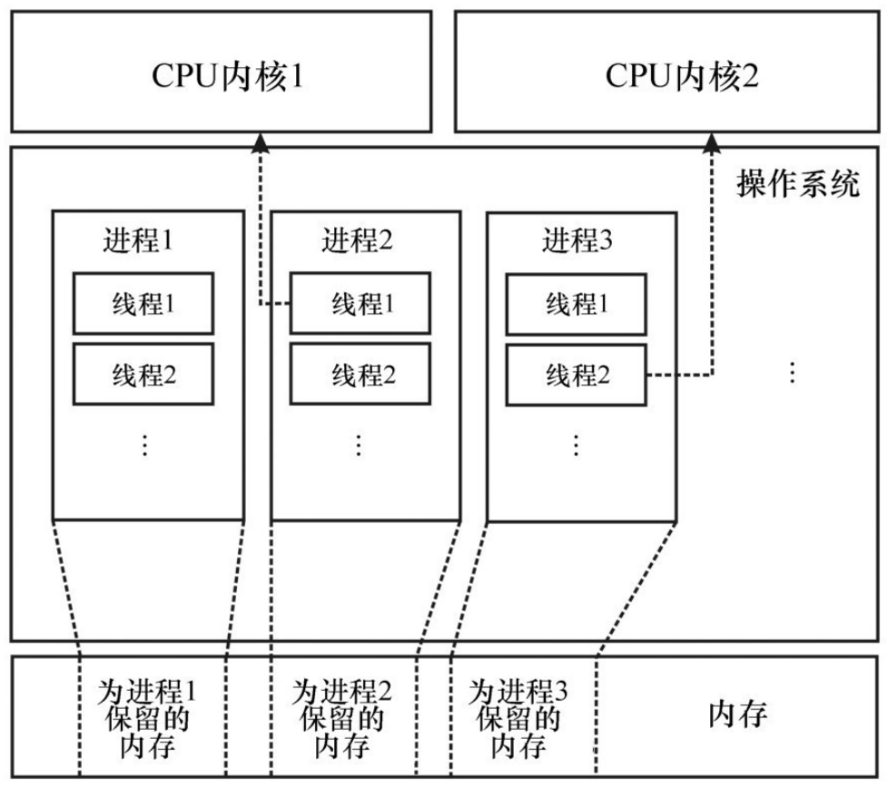

1. 第2章: JVM 和 JMM 上的并发性
Scala 程序主要运行在 JVM 上, 这成就了众多的 Scala 并发库。
Scala 的内存模型、多线程能力以及线程间同步, 都继承自 JVM。
绝大部分高层次的 Scala 并发构造都基于 JVM 并发编程的底层原语。
- 这些原语是实现并发计算的基本方式, 同步原语是 JVM 上的并发编程的基石。
在大部分情况下, 开发者需要避免直接使用底层并发技术, 而应该使用高层次并发抽象构造技术。
开发者需要掌握一些并发的底层基础知识，明白这些问题有助于理解高层次并发抽象构造。
- 什么是线程
- 为什么保护块优于忙等待
- 内存模型有何用处等
内容提要
- 创建和启动线程, 并等待其结束。
- 通过对象监控器和同步语句在线程之间进行通信。
- 利用卫式代码块避免忙等待。
- 易失变量的语义。
- JMM 的规范及其重要性。
1.1. 进程和线程
在现代抢占式多任务操作系统中, 程序员基本无法指定一个处理器来运行程序。
- 同一个程序可能同时运行在多个处理器上。
- 在程序运行过程中, 不同部分的可执行代码被分配到不同的处理器上, 这个分配机制称为多任务, 它是由操作系统负责的, 计算机用户不可见。
在合作式多任务操作系统中, 程序可以决定何时停止使用处理器, 并将控制权移交给其他程序。这对程序员提出了更高的要求, 且很容易造成程序无法及时响应。
当前大部分操作系统依赖于抢占式多任务机制, 这样每个程序都会不断被分配到某个处理器上的一小段处理时间。这些时间片断被称为时间片。因而, 对应用开发者和用户而言, 多任务的调度过程是不可⻅的。
进程是正在运行的计算程序实例。
- 当一个进程启动之后, 操作系统会为它分配一部分内存和其他计算资源。
- 然后, 操作系统将进程指定给一个处理器, 让进程在处理器的一个时间片上运行。
- 一个时间片用完之后, 操作系统可能会将处理器的下一个时间片分配给其他进程。
- 需要强调的是, 进程的内存和其他计算资源是私有的, 进程之间不能直接访问对方的内存, 也不能同时使用私有的大部分资源。
- 大部分程序只有一个进程, 有些程序则可能有多个进程。
- 对于多进程的程序, 程序内的不同任务分别由独立的进程处理。因为进程无法直接访问其他进程的内存, 所以基于多进程的多任务程序的实现过程往往是非常烦琐的。
进程中独立的计算过程称为线程。
- 每个线程都描述了程序执行过程中的程序栈和程序计数器的当前状态。
- 程序栈包含当前执行的一系列方法调用, 以及每个方法的局部变量和参数。
- 程序计数器描述了当前方法中指令的位置。
- 处理器运行线程的方式是操作其程序栈的状态或程序对象的状态, 然后执行当前程序计数器上的指令。当说一个线程执行一个操作, 指的是该线程所在的处理器执行了那个操作。
- 在抢占式多任务操作系统中, 线程的执行是由操作系统来调度的。开发者只能假设分配到每个线程的处理器时间是均等的。
- 操作系统的线程是一种编程设施, 通常表现为一种与操作系统相关的编程接口。
- 和独立的进程不同, 同一进程内的不同线程是可以共享内存的, 从而通过内存的读写就可以实现线程之间的通信。
- 另一种进程的定义方式是将它视为一个线程集合, 再加上这些线程共享的内存和其他资源。
- 每个线程都描述了程序执行过程中的程序栈和程序计数器的当前状态。
典型操作系统中的
进程/线程概念模型- 每个进程都指定了确定的计算机内存区域。
- 每个进程都可以包含多个操作系统线程。
- 操作系统会周期性地将不同的操作系统线程指定到不同的 CPU 内核上, 从而让所有进程都能持续执行。

启动一个新的 JVM 实例总会创建一个新进程。在这个 JVM 进程中, 多个线程同时运行。
- JVM 将该进程的线程表示为 java.lang.Thread 类。
- JVM 没有实现定制的线程。每个 Java 线程都直接被映射为一个操作系统线程。这意味着 Java 线程与操作系统线程非常类似, 而且 JVM 也需要遵守操作系统相关的限制条件。
Scala 是一种程序语言, 在默认情况下其程序会被编译为 JVM 字节码。
- 从 JVM 的⻆度看, Scala 的编译结果和其他 Java 程序的编译结果没什么区别。
- Scala 程序可以直接调用其他 Java 库, 在很多情况下, 反过来操作也是可以的。
- Scala 重用了 Java 中的线程 API。主要原因有
- 首先是 Scala 可以直接和已有的 Java 线程模型交互。
- 其次, 采用同样的线程 API 是出于兼容性考虑的。在 Java 线程 API 之外, Scala 不会引入新东西。
1.1.1. 线程的创建和启动
每当创建新的 JVM 进程时, 会默认创建几个线程。其中, 非常重要的线程为主线程, 它执行的是 Scala 程序的 main 方法。 参考
在 JVM 上, 线程对象由 Thread 类表示。
每个线程都会经历多种线程状态。
- 当一个 Thread 对象被创建时, 它的初始状态为 new。
- 当新线程对象开始执行时, 它进入 runnable 状态。
- 当线程对象完成执行时, 它会变成 terminated 状态, 并且无法再次执行。
启动一个独立的线程包含两步。
- 第一步, 需要创建一个 Thread 对象, 它为线程栈和线程状态分配了内存。
- 第二步, 线程的启动需要调用此对象的 start 方法。
当一个 JVM 应用程序启动时, 它会创建一种被称为主线程的特殊线程, 此线程会调用指定类中的 main 方法。
当操作系统决定将新线程指定到某个处理器时, 后面的事情程序员就管不了了, 不过操作系统必须确保线程一定会被执行。
主线程启动新线程之后, 调用新线程的 join 方法，此方法会让主线程暂停执行, 直到新线程完成执行。
- 换一句话说, join 操作让主线程进入等待(waiting)状态, 直到新线程终止。需强调的是, 等待中的线程会将控制权交还给处理器, 然后操作系统会将这个处理器指定给其他线程。
等待中的线程通知操作系统它正在等待某个条件, 并且停止消耗中央处理器(CPU)时钟, 而不会不停地检查条件是否满足。
- 操作系统会找到一个可用的处理器, 并让它运行子线程。一个线程执行的指令来自 Thread 的 run 方法, 因此需要重载这个方法。
join 方法会保证线程在执行 join 之前结束。
Thread 类的静态 sleep 方法, 此方法会让当前执行的线程延缓执行指定的毫秒数, 即让当前线程进入定时等待(timed waiting)的状态。
- 然后, 操作系统在调用 sleep 之后将处理器分配给其他线程使用。当然, 延缓的时间要比操作系统典型的时间片⻓一些。
不是所有使用线程的程序都是确定性的。
大部分多线程程序都是非确定性的, 因此多线程编程是非常难的, 原因涉及多个方面。
- 规模太大的程序会让程序员难以推断其确定性属性, 多个线程之间的交互过程往往过于复杂。
- 而且有些程序在逻辑上就是非确定性的。
1.1.2. 原子执行
一种线程间的通信方式：等到某一时刻同时终止。被连接(被调用 join)的线程发出了自己已经运行结束的信息。
- 这个运行结束的信息实际上没太大用处, 大部分时候, 线程需要知道其他线程运行过程中的信息。
当一个线程被调用 join 方法时, 它所有的内存写操作都会在 join 返回之前发生, 而且这些写操作对调用 join 的那个线程是可⻅的。